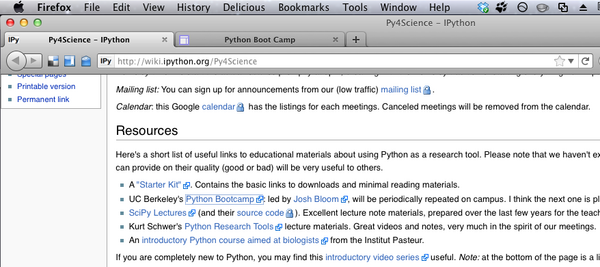
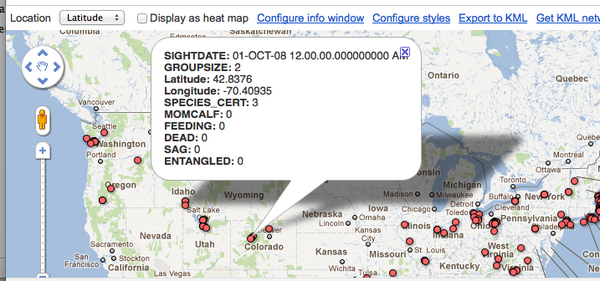
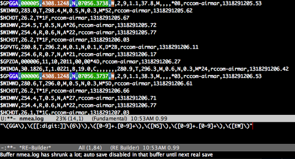
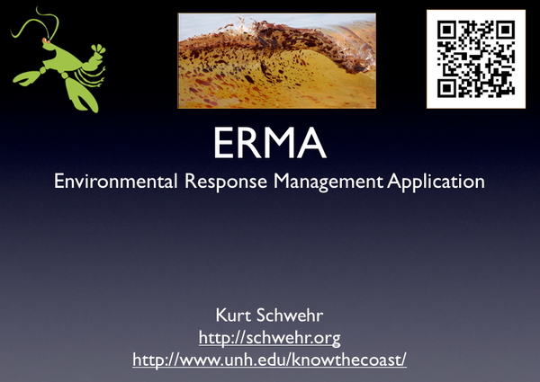
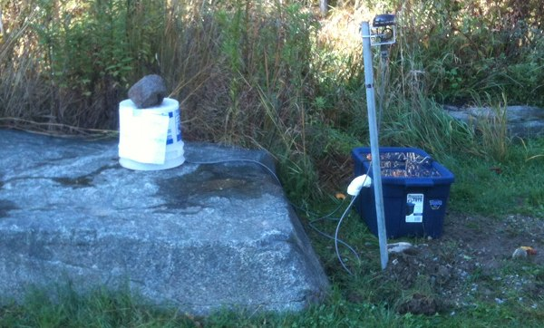
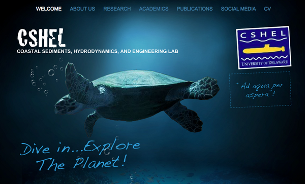
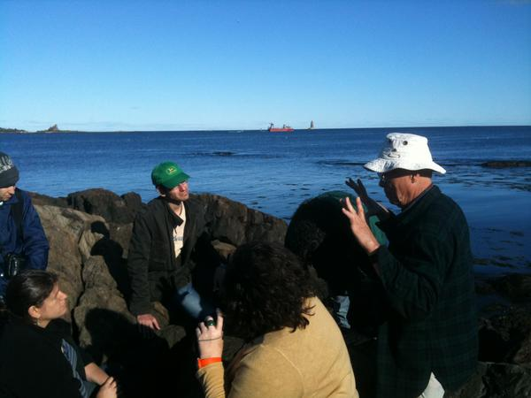
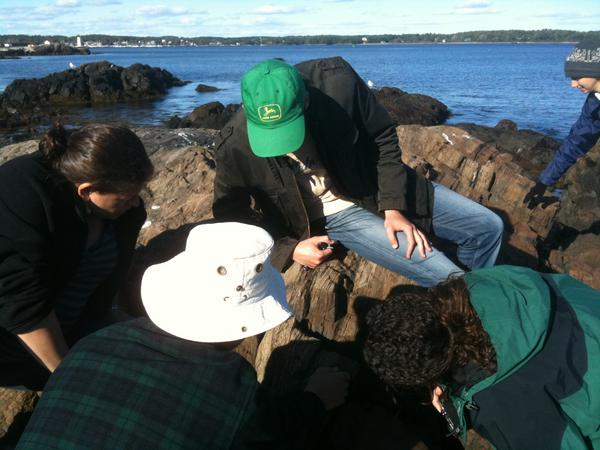
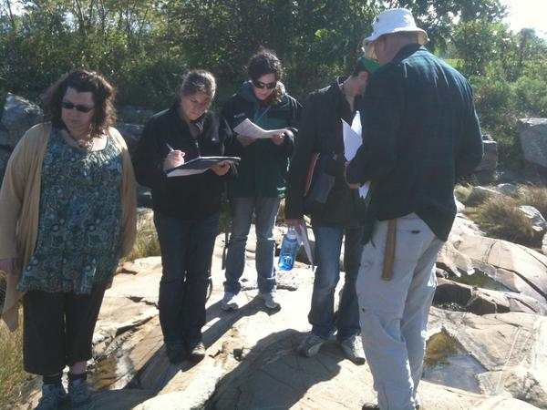
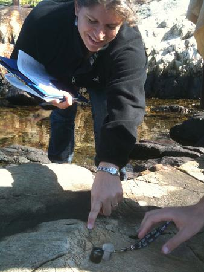

10.30.2011 18:13
Research Tools Lecture 17
While we might be on generator power
at home with last night's storm (5+ inches of very very wet snow in
October... wtf?), I have finished cleaning the audio for lecture 17
today for
research tools on qgis/gdal.
17-qgis-ggal.mp3, pdf, org
17-qgis-ggal.mp3, pdf, org
10.28.2011 17:45
py4science at Berkeley
It's pretty awesome that a UC
Berkeley python group chose to link to my python videos in their
resources! Cool!
UC Berkeley Py4Science series
There look to be some great links on that page. I need to check out these: Python Boot Camp and ontwik: Python Training âÄì Getting Started with Python
UC Berkeley Py4Science series

There look to be some great links on that page. I need to check out these: Python Boot Camp and ontwik: Python Training âÄì Getting Started with Python
10.27.2011 17:09
ipython
G+ has just given me some really
interesting items from people who found my feed. Here are two of
them...
ipython notebooks: second impressions and Review: ipython notebooks
PyGotham 2011: Powerful Pythonic data analysis using pandas by Wes McKinney
Lots of python videos! Python Miro Community All Python Video, All the Time
ipython notebooks: second impressions and Review: ipython notebooks
PyGotham 2011: Powerful Pythonic data analysis using pandas by Wes McKinney
Lots of python videos! Python Miro Community All Python Video, All the Time
10.27.2011 08:02
If you stop vmware
Yesterday, I was trying to debug some
serial-to-wifi bridge devices. The vmware network interfaces kept
being distracting, so I ran
sudo /Library/Application\ Support/VMware\ Fusion/boot.sh --stopThis morning, when I tried to connect to my ubuntu 11.04 virtual machine, I got strange messages like "Cannot find a valid peer process to connect to" and some missing /dev/vmmon (? forgot to write down what the error was). I restarted the vmware infastructure like this:
sudo /Library/Application\ Support/VMware\ Fusion/boot.sh --startI then rebooted the virtual machine for good measure. It all seems to work fine again, but those error messages in VMWare Fusion 3.1.3 were not the most helpful to remind me how to get back on track.
10.24.2011 08:33
RT Video 16 - Simple signal processing with numpy arrays
Just a really simple convolve and fft
demonstration with numpy arrays to get people thinking about signal
processing with "ipython --pylab". This one is super short.
10.23.2011 14:12
RT Video 15 - Python Part 8 - Matplotlib 1
The first lecture covering plotting
and graphing using matplotlib via "ipython --pylab". Hopefully,
this will push me over just using matplotlib so that I finally give
up my old gnuplot habit. gnuplot is pretty powerful, but matplotlib
is just a better tool for those who work in python!
10.19.2011 10:48
Today - Monica's thesis proposal
Today, Wednesday, 19-Oct-2011:
NRESS PROPOSAL DEFENSE "Segmentation and Seismic Behavior of Oceanic Transform Faults" By Monica Wolfson Advisor: Margaret Boettcher James Hall, Room 216 2:00pmUpdate 2011-Oct-20: Monica successfully defended her proposal and is now a "PhD Candidate"!
10.17.2011 08:46
Fusion tables confusion
Fusion tables is a lot confused about
it's coordinates. At least the KML that it exports is correct. The
question is why is the map view so confused and how to trick it
into doing the right thing? It's a annoying that geocoding took
longer than 5 minutes for 4500 rows.

10.16.2011 14:01
Emacs CUA mode for editing columns
This is a very nice demonstration of
emacs Common User Access (CUA) mode
10.16.2011 10:51
emacs regular expressions (regex)
I keep trying to learn emacs lisp and
better my emacs skills. As a part of that I realize that I really
should shart trying to use regular expressions (regex). I use them
in python all the time and with the named matches getting returned
as a dictionary, import re with kodos just rocks. In emacs, I'm
just not getting it quite a easily.
First, I found a suggestion to switch to the "string" syntax and use re-builder.
We'll there are lot more "\" characters than I would like and [[:digit:]] sucks compaired to just saying [0-9], but it works. And the highlighting is nice. Here is my emacs lisp string style regex:
I'm not quite sure how to write a GGA regex in rx. With a little playing with M-x eval-print-last-sexp
First, I found a suggestion to switch to the "string" syntax and use re-builder.
(require 're-builder) (setq reb-re-syntax 'string)Okay, can I write a NMEA GGA parser?

We'll there are lot more "\" characters than I would like and [[:digit:]] sucks compaired to just saying [0-9], but it works. And the highlighting is nice. Here is my emacs lisp string style regex:
"\$\([A-Z]\{2\}\)\(GGA\),\([[:digit:]]\{6\}\),\([0-9]+.[0-9]+\),\([NS]\),\([0-9]+.[0-9]+\),\([EW]\),\([0-9]+\)?,\([0-9]+\)?,\([0-9]+.[0-9]+\)?,\([0-9]+.[0-9]+\)?,M,\([0-9]+.[0-9]+\)?,M?,\([0-9]*\),\([0-9]*\)\*\([0-9A-F]\{2\}\)"
Got that? For comparison, here is what I had with python:
[$](?P<talker>[A-Z][A-Z])(?P<sentence>GGA),
(?P<time_utc>(?P<hour>\d\d)(?P<minute>\d\d)(?P<second>\d\d\.\d*))?,
(?P<lat>(?P<lat_deg>\d\d)(?P<lat_min>\d\d\.\d*))?,
(?P<lat_hemi>[NS])?,
(?P<lon>(?P<lon_deg>\d{3})(?P<lon_min>\d\d\.\d*))?,
(?P<lon_hemi>[EW])?,
(?P<gps_quality>\d+)?,
(?P<satellites>\d+)?,
(?P<hdop>\d+\.\d+)?,
(?P<antenna_height>[+-]?\d+\.\d+)?,
(?P<antenna_height_units>M)?,
(?P<geoidal_height>[+-]?\d+\.\d+)?,
(?P<geoidal_height_units>M)?,
(?P<differential_ref_station>[A-Z0-9.]*),
(?P<differential_age_sec>\d+)?
\*(?P<checksum>[0-9A-F][0-9A-F])
I think the python is a wee bit easier to comprehend and use.
Although, looking at my very expensive NMEA 4.0 documentation (yes,
I bought the darn thing), it looks like I have the age and teh ref
station backwards and the ref station should only be 0000-1023.
Using the emacs version, I have to count the match numbers.
Yuck.I'm not quite sure how to write a GGA regex in rx. With a little playing with M-x eval-print-last-sexp
(require 'rx) ; C-x C-e to load rx (rx (one-or-more digit) ) "[[:digit:]]+" (rx (and "GGA" "," (one-or-more digit))) "GGA,[[:digit:]]+"Yeah, I don't yet get how to effectively use regular expressions in emacs. I can't quite wrap my head around how to now write a function that would whip through a region and pull out the GPS x,y coords.
10.15.2011 19:49
Research Tools Video 13 - Python Part 6 - parsing GPS data
Starting to get into more fun topics!
We've done the background and now it is time to reap the rewards by
working with some real data. At the end of this video, you will
have plotted the wander of a GPS for one day.
10.15.2011 11:20
Know The Coast Day at UNH
Today is Know the Coast Day at UNH.
I'm giving talks at noon and 2PM at Chase Ocean Engineering.

10.15.2011 11:16
Outdoor seismometer
Margaret and her group currently have
an experiment running outside of CCOM: an outdoor seismemeter!
Please don't touch the bucket.

10.14.2011 09:48
Research Tools Lecture 13 - if, while, def, class
13-python-if-while-def-class.mp3 and
org,
html, and
pdf
Comments, questions, etc can go here.
I go over boolean expressions (1==1 gives True and 1==2 gives False), while loops, functions, classes, and start into collecting data with socat from a weather station on the roof of our building.
Comments, questions, etc can go here.
I go over boolean expressions (1==1 gives True and 1==2 gives False), while loops, functions, classes, and start into collecting data with socat from a weather station on the roof of our building.
10.13.2011 15:39
Apple iCloud?
Yeah, I need to know more before I
end up in this service... Linux and Windows support???
Apple has some serious work to do to catch up to DropBox and the many many other cloud storage services.
Apple has some serious work to do to catch up to DropBox and the many many other cloud storage services.
10.13.2011 09:12
Research Tools Video 12 - Python Part 5 - while loops
I prefer for to while for most
everything. But once in a while, I use while.
Plus I love C-c > and C-c < in emacs python-mode for pushing python indenting around.
dmacks++ for getting emacs23 X11 to work in Mac OSX 10.7 w/ fink!
Plus I love C-c > and C-c < in emacs python-mode for pushing python indenting around.
dmacks++ for getting emacs23 X11 to work in Mac OSX 10.7 w/ fink!
10.13.2011 06:38
CARIS Lidar reader in pure python
I wrote this CARIS LADS bathy lidar
format reader in 2008. I don't much like the format, but the reader
works. Mixing channels seems like a terrible idea. But the format
exists and this code might be useful for some. I ran back into the
code because I was looking through my personal svn repo looking for
examples of using while loops in python.
while peek_next_char(infile) in 'SPNX':
https://github.com/schwehr/caris-lidar
Note: I don't have any pointers to sample data anymore. I anyone wants to contribute some points to publicly accessable CAF/CAB data, let me know and I will link it in (or better yet, send me a pull request with a patch against the README).
while peek_next_char(infile) in 'SPNX':
https://github.com/schwehr/caris-lidar
Note: I don't have any pointers to sample data anymore. I anyone wants to contribute some points to publicly accessable CAF/CAB data, let me know and I will link it in (or better yet, send me a pull request with a patch against the README).
10.12.2011 12:27
Research Tools Video 11 - Python Part 4
Yeah, didn't get to the while loop in
this one. So much for the title slide 
10.11.2011 14:18
Sensor platform coordinate frames and SIS documents
Today on the RVTECH mailing list, the
Rolling deck 2 Repository crew posted a note about Sensor Coordinate
System by Shawn R. Smith et al. I'm glad they are thinking
about this as it is super critical to be able to sight in
instruments and devices onto a ship. But it also makes me
immediately nervious. There be draggons.
I tried to pull out some of the spacecraft Software Interface Specifications (SIS) documents from Mars vehicles that I have worked. My memory has them being more detailed filled. I spent untold hours working through the hard work of engineers like Payam Z. Every time we went through material (even if we had already been through it), we found more areas that needed additions or corrections. This stuff is HARD to document. And it only gets worse when things like CAD documents (ahem, phx) go missing and you have to start doing as builts from something that isn't even the actual hardware. Assomtotically heading towards perfection, but never getting there. Always something that we missed.
We started counting up the number of coordinate frames that we had in Mars Pathfinder (my first flight mission). The number was huge and there was mass confusion. Then the ops team shuffled the air bags and we had a whole other set of coordinate frames.
Mars Pathfinder 1997: MPF_edrsis
Mars Polar Lander 1999: Does anyone have a copy? I don't seem to have it.
Mars Exploration Rovers 2004: MER_camsis_v4_9-25-07.pdf
Phoenix Mars Lander 2008: phxCamSis.pdf
If you are building a research ship, here is my advice for you. First demand all the CAD models and a full 3D model of the ship as a part of delivery. Second, make sure you have a good solid set of sight lines through the ships to a couple of very stable fiducial points. And expect that things on the ship will be changed over the years.
Being able to chain together coordinate frames in sensor pods, towed gear (deep or surface fish), etc. is really important. It is really going to get confusing with vehicles like Alvin or ROV/AUV platforms if you try to do it right in managing all of the tool changes and section swaps as missions change.
I tried to pull out some of the spacecraft Software Interface Specifications (SIS) documents from Mars vehicles that I have worked. My memory has them being more detailed filled. I spent untold hours working through the hard work of engineers like Payam Z. Every time we went through material (even if we had already been through it), we found more areas that needed additions or corrections. This stuff is HARD to document. And it only gets worse when things like CAD documents (ahem, phx) go missing and you have to start doing as builts from something that isn't even the actual hardware. Assomtotically heading towards perfection, but never getting there. Always something that we missed.
We started counting up the number of coordinate frames that we had in Mars Pathfinder (my first flight mission). The number was huge and there was mass confusion. Then the ops team shuffled the air bags and we had a whole other set of coordinate frames.
Mars Pathfinder 1997: MPF_edrsis
Mars Polar Lander 1999: Does anyone have a copy? I don't seem to have it.
Mars Exploration Rovers 2004: MER_camsis_v4_9-25-07.pdf
Phoenix Mars Lander 2008: phxCamSis.pdf
If you are building a research ship, here is my advice for you. First demand all the CAD models and a full 3D model of the ship as a part of delivery. Second, make sure you have a good solid set of sight lines through the ships to a couple of very stable fiducial points. And expect that things on the ship will be changed over the years.
Being able to chain together coordinate frames in sensor pods, towed gear (deep or surface fish), etc. is really important. It is really going to get confusing with vehicles like Alvin or ROV/AUV platforms if you try to do it right in managing all of the tool changes and section swaps as missions change.
10.11.2011 08:57
Another reason why not to buy a Find Me SPOT
UPDATE 2011-Oct-14: I got a
very nice phone call from a manager at Spot who said that they
would resolve the issue and refund my money, which was indeed
refunded. It's great to see a company that is willing to make
things right. She also chatted with me about how they might make
the Spot service better.
Original post:
In the "no fun" department: I just got an email from Find Me Spot saying that they were unable to charge my credit card for $150. WHAT!?!?!?! I didn't think that I had find me spot service after the first free year that I got. I missed noticing that they had charged me a year ago. Evil small print stuff you click through on web legal notices.
So I called hoping they would just remove the charge and see that my account hasn't had any activity for about 1.5 years at this point. Their answer was that they couldn't refund that money and that they would pass this to a marketing director. I didn't get an email notice of a change to my credit card. But thankfully, my credit card number changed and then they were happy enough to email me.
So a service that I didn't like, would never have payed for out of pocket, and never used during this period that they charged me for.
I did see some success with the devices during during deepwater horizon, but at this point, I just don't like the company. I know many of you have success with the devices, but for folks looking for something, I recommend against this company.
If FindMeSpot had decent customer service, I would have received emails like "we see you haven't used or tested your device in 6 months. now would be a good time to send a test message and check on your online account." So yet another strike against the company.
If they get back to me with a refund for that unused year that they snagged me for, I will happily retract this post.
Yes, I need to do a better job of noticing every charge, but companies also have a responsibility to keep up with the customer. Especially with safety of life devices.
And they want me to go through 2-3 other people to see about a refund because the manager is unable to. I just don't have time for companies like this.
A quality billing manager who can't figure out how to help people.
Original post:
In the "no fun" department: I just got an email from Find Me Spot saying that they were unable to charge my credit card for $150. WHAT!?!?!?! I didn't think that I had find me spot service after the first free year that I got. I missed noticing that they had charged me a year ago. Evil small print stuff you click through on web legal notices.
So I called hoping they would just remove the charge and see that my account hasn't had any activity for about 1.5 years at this point. Their answer was that they couldn't refund that money and that they would pass this to a marketing director. I didn't get an email notice of a change to my credit card. But thankfully, my credit card number changed and then they were happy enough to email me.
So a service that I didn't like, would never have payed for out of pocket, and never used during this period that they charged me for.
I did see some success with the devices during during deepwater horizon, but at this point, I just don't like the company. I know many of you have success with the devices, but for folks looking for something, I recommend against this company.
If FindMeSpot had decent customer service, I would have received emails like "we see you haven't used or tested your device in 6 months. now would be a good time to send a test message and check on your online account." So yet another strike against the company.
If they get back to me with a refund for that unused year that they snagged me for, I will happily retract this post.
Yes, I need to do a better job of noticing every charge, but companies also have a responsibility to keep up with the customer. Especially with safety of life devices.
And they want me to go through 2-3 other people to see about a refund because the manager is unable to. I just don't have time for companies like this.
A quality billing manager who can't figure out how to help people.
10.10.2011 08:00
Research Tools Video 10 - Emacs part 5 - mode
This video gives a quick introduction
to modes in emacs. Try out some of the minor modes while working on
a file of your choosing.
M-x auto-fill-mode <--- wrap text C-u 4 0 C-x f <--- set fill column to 40 M-q <--- refill / reflow paragraph M-o M-x <--- center line M-x fill-region <--- reflow all paragraphs in a region M-x flyspell-mode <--- turn on real time spell checking M-x yas/minor-mode <--- be able to paste commonly used text M-x overwrite-mode <--- step on text rather than new text
10.09.2011 12:10
Research Tools Video 8 - many ways to run python code
I'm sure that many people following
this series could come up with lots of other ways to run python
code, but these are the main ways that I try out python code.
video-8-python-2-running.org
video-8-python-2-running.org
10.09.2011 08:58
The return of the rock library
I just saw this video by Ron
Schott:
Awesome! This made me dig way back into 1998/99, when Peter Coppin and I worked on building something we called the "Rock Library". The idea was to improve on the 2D images in text books for learning about rocks and minerals. I had just done Mars pathfinder and I thought the artifacts of 3D modeling detracted from the actual subject and that we could do it for a lot cheaper. Now I see Ron's video and know that the time that you had to have a massive library of actual rocks in minerals in the lab and classroom for teaching are gone. I still think you must have a good selection of rocks and minerals to actually lay your hands on, but now we can craft a massive catalog of rocks and minerals.
I also want to see a huge public library of petrographic microscope movies. I always hated trying to discuss some mineral under the microscope when the professor and I had to keep swapping between who was looking. Nothing like realizing you've lost tons of time because what you were looking at was not the same same part of the view that the instructor was describing.
I hope that Ron inspires many more people to join the effort to produce digital geology resources.
I am frustrated that I pulled this video from material I have sitting in my "papers to write" folder on my computer. 13 years later, I still haven't written this paper with Peter. But at least, now I've blogged about it. Ron keeps proving that this stuff is ready for prime time. (e.g. his gigapan field geology stations)
This is a shatter cone from my library that comes from the Haughton Crater, Devon Island, Nunavut, CA. Haughton Mars Project
Awesome! This made me dig way back into 1998/99, when Peter Coppin and I worked on building something we called the "Rock Library". The idea was to improve on the 2D images in text books for learning about rocks and minerals. I had just done Mars pathfinder and I thought the artifacts of 3D modeling detracted from the actual subject and that we could do it for a lot cheaper. Now I see Ron's video and know that the time that you had to have a massive library of actual rocks in minerals in the lab and classroom for teaching are gone. I still think you must have a good selection of rocks and minerals to actually lay your hands on, but now we can craft a massive catalog of rocks and minerals.
I also want to see a huge public library of petrographic microscope movies. I always hated trying to discuss some mineral under the microscope when the professor and I had to keep swapping between who was looking. Nothing like realizing you've lost tons of time because what you were looking at was not the same same part of the view that the instructor was describing.
I hope that Ron inspires many more people to join the effort to produce digital geology resources.
I am frustrated that I pulled this video from material I have sitting in my "papers to write" folder on my computer. 13 years later, I still haven't written this paper with Peter. But at least, now I've blogged about it. Ron keeps proving that this stuff is ready for prime time. (e.g. his gigapan field geology stations)
This is a shatter cone from my library that comes from the Haughton Crater, Devon Island, Nunavut, CA. Haughton Mars Project
10.07.2011 11:24
CCOM Seminar today - Art Trembanis
Today at CCOM:
Dr. Art Trembanis: Habitat mapping of Conch Reef, Florida, FL: geoacoustic and benthic photographic mapping from an AUV in support of NEEMO XV CCOM/JHC SEMINAR SERIES FRIDAY, October 7, 2011 3:00 pm Chase Ocean Engineering Lab, Rm. 130 In early May 2011, a 4-day survey was conducted at Conch Reef, FL surrounding the Aquarius Underwater habitat. The platform for these surveys was a Gavia autonomous underwater vehicle (AUV) equipped with phase measuring swath bathymetry, side-scan sonar, color still camera, and a HD video camera. Water quality parameters (i.e., salinity, temperature, and dissolved oxygen) were concurrently measured. Although these surveys were developed as part of a precursor mission in support of the NEEMO (NASA Extreme Environment Mission Operations) XV program, they also provide an unprecedented level of reef habitat detail critical for coral reef monitoring and management throughout the Florida Keys Marine Sanctuary. A previous NOAA multibeam survey in 2007 provided baseline coverage (1.5 km x .45 km), but had a hole in the Carpenter Basin around the Aquarius Habitat, due to the challenges of surveying from a large vessel with significant underwater obstacles present. Our new survey succeeded in collecting data around the habitat in the previously unmapped region. The collected data provides 0.5 m resolution bathymetry in the Carpenter Basin and then 1.0 m resolution in the rest of the survey area (2 km x 0.8 km). The collected geoacoustic data is being analyzed with a statistical segmentation program (QTC SwathView) for classification of the seabed into distinct acoustic bottom types, which will be ground-truthed by the collocated benthic images.Art heads the Coastal Sediments, Hydrodynamics, and Engineering Lab at the University of Delaware

10.07.2011 09:19
CCOM Facebook page
The Center for Coastal and Ocean
Mapping / (NOAA) Joint Hydrographic Center now has an official
facebook organizational page!
CCOM/JHC on Facebook
CCOM/JHC on Facebook
10.07.2011 08:49
AdvanceGrant field trip
Last month Margaret, Wally, Roxy, a
number of graduate students in Margaret's lab and I went out to
Newcastle, NH for a field trip as a part of Advance Grant that
Margaret and I received. We got to examine mylonite and
pseudotachylyte structures with the guidance of Wally who has
researched many aspects of these units over a number of decades. I
don't get to look at field outcrops very often, so this was a
special treat for me.




10.05.2011 18:20
Google Group for Research Tools
http://groups.google.com/group/researchtools2011
I miss the days of when each class had an nntp feed (Net News) feed where there were announcements and discussions. Since I am trying to do this class as open course ware (OCW), blackboard's closed model is tough. Anything I put up on blackboard is only available inside of the UNH community. Please comment and discuss the course material on this google group.
I miss the days of when each class had an nntp feed (Net News) feed where there were announcements and discussions. Since I am trying to do this class as open course ware (OCW), blackboard's closed model is tough. Anything I put up on blackboard is only available inside of the UNH community. Please comment and discuss the course material on this google group.
10.05.2011 12:33
Research Tools Lecture 11 - ipython and python data types
I've got Lecture 11 for Research
Tools online:
This time, I've tried to add time offsets into the key/pdf/ppt
presentation so that it is easier to go from the slides to the
audio.
This class goes over strings, lists, numbers, and reading/writing a text file from the ipython shell.
This class goes over strings, lists, numbers, and reading/writing a text file from the ipython shell.
10.03.2011 12:43
The Programming Historian
John Garrigus just gave
me a pointer to the book called The Programming
Historian that covers Python and Javascript. I think it is
pretty awesome to have material that covers your own field. They
also mention Zotero a good number of times. I will have to read
through how they use Zotero.
In a short look last night when I couldn't sleep for a few hours in the middle of the night, I think this is helpful to other researchers in giving a different (and especially non-Computer Science) style and view of code. It will also be a lot different from what I am doing in Research Tools. Different is good!
In a short look last night when I couldn't sleep for a few hours in the middle of the night, I think this is helpful to other researchers in giving a different (and especially non-Computer Science) style and view of code. It will also be a lot different from what I am doing in Research Tools. Different is good!
10.02.2011 22:59
Healy 2011 Law of the Sea Cruise video
Thanks to Tami for posting this video
from the cruise on the Healy that just finished.